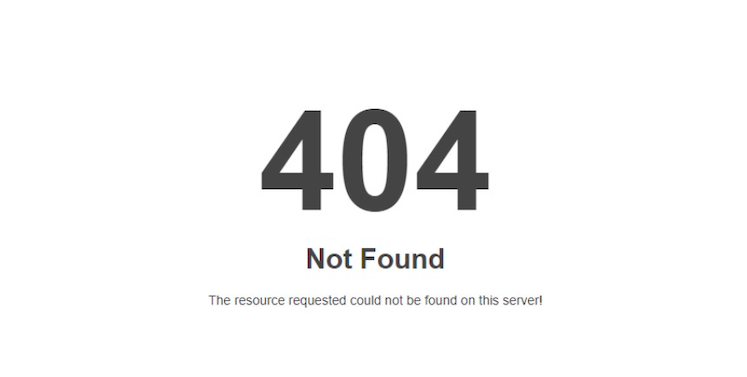

Course Title: Cloud Computing Practical Lab 1
404 Error
Project Description
This static website was built as part of my Pre-Lab Assignment to understand web deployment. It demonstrates my ability to independently manage a Git workflow, structure HTML pages, and apply CSS styling before deploying a live site via GitHub Pages.
